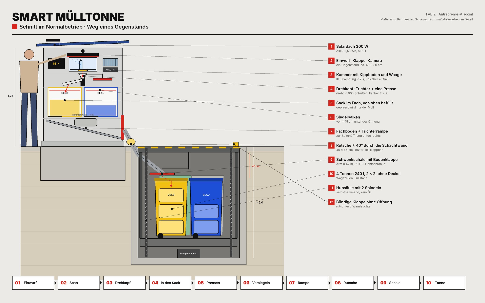
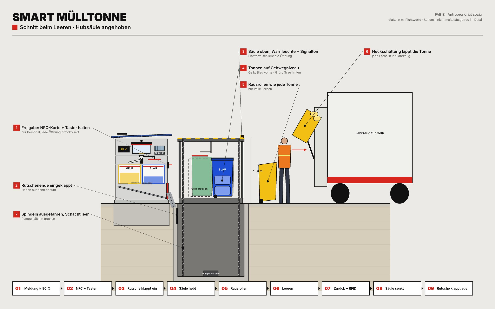

Sommer
Ein 300-W-Modul liefert in Bukarest an einem klaren Sommertag grob 1,3–1,5 kWh. Mehr als genug.
Sortiert.Gepresst.Versenkt.
Die Mülltonne, die selbst trennt, presst und meldet, wann sie voll ist. Als Abo für Stadt und Handel, gebaut als Sozialunternehmen in Bukarest.
Denisa · Sarah · Paula · Malina · Alexia · Andreea · Rareș · Alesia
Präsentieren: → nächstes Kapitel · ← zurück · 1–8 Sprecher · Leertaste Autoplay · F Fragen · T Zeit neu starten
2022 wurden zwei Institutionen der Stadt wegen Müllbergen im Parcul Regele Mihai I mit je 50.000 Lei bestraft. Das Problem ist der Moment des Einwurfs.
Quelle: Eurostat über Energynomics. Rumänien recycelt von allen EU-Staaten am wenigsten.
Architektonische Innovation (Henderson & Clark, 1990): bewährte Komponenten, neu verbunden.
Wähle einen Gegenstand. Die Kamera erkennt ihn in unter 2 Sekunden. Unter dem festgelegten Sicherheitswert gilt: Unsicher heißt Grau.
Jeder Einwurf landet im Fach seiner Farbe, nach dem rumänischen Farbcode.
Simulation mit Beispielwerten. Die echte Erkennungsgenauigkeit messen wir im Labortest (Monat 3) und im Indoor-Pilot (ab Monat 5).
Wir verkaufen keine Tonne, sondern eine funktionierende getrennte Sammlung: für zwei zahlende Kunden und einen Partner.
Leerung ab ca. 80 % Füllstand je Tonne. Ziel: 2 statt 7 Leerungen, also rund 71 % weniger.
Befragung im Oktober 2026: 51 Entscheider, u. a. von Google, PwC, Kaufland und aus Bezirksrathäusern.
Mehrfachauswahl, n = 51. Zufriedenheit mit der heutigen Sammlung: 3,27 von 5.
Ehrlich: 51 Antworten sind nicht repräsentativ. Den Nachweis liefern zehn Gespräche mit Filial- und Facility-Leitungen und vier unterschriebene Indoor-Abos bis Monat 4.
Verstehen, wollen, bezahlen: Die dritte Stufe bricht. Die Befragten liefern die Lösung selbst.
Grün: Median-Korridor der Zahlungsbereitschaft (3.000–4.999 €). Ein Direktverkauf der Urban-Variante ist unrealistisch.
Je 49 % knüpfen den Kauf an Pilotergebnisse, nachgewiesene Einsparungen und garantierte Wartung. Das sind Risikofragen. Darum: Product-as-a-Service.
Vier SMT Indoor laufen 8 Monate in Handelsfilialen, die erste SMT Urban 6 Monate im Parcul Regele Mihai I. Klicke eine Phase an.


Kostenplan aus 28 Positionen, berechnet mit recherchierten Marktpreisen. Netto, ohne MwSt.
Vor der Bestellung holen wir je zwei Angebote für Gehäuse, Mechatronik und Schacht ein. Mehrkosten bis 4.546 € deckt die Liquiditätsreserve.

Drei Erlösquellen, ein Abo-Modell, das mit jedem Gerät besser wird.
Startwert = Pilotflotte (1 Urban, 4 Indoor). Deckungsbeitrag: Urban 483 €, Indoor 148,75 € pro Monat. Abschreibung über die Vertragslaufzeit (60 bzw. 36 Monate). Rechnet mit dem Schalter aus Kapitel 6.
Tranche 2 (15.000 €) ist gesperrt, bis der Prototyp den Funktionstest besteht und die Indoor-Abos unterschrieben sind (Monat 4–5).
Wandeldarlehen eines Impact-Investors. Kein Bankkredit: +1.566 € pro Jahr reichen nicht für eine Tilgung. Plan B ohne Tranche 2: nur Indoor, Urban ein Jahr später.
Kreislaufwirtschaft als Geschäftsmodell, entlang aller sieben Glieder der Accenture Circular Value Chain. Klicke ein Glied an.
Mit Ihrer Investition wird der Herăstrău zum Vorbild für Bukarest und für Rumänien.
Oberfläche · KI-Scan · Untergrund · 80 %-Logistik · Business Model
Zwei Produkte auf einer Technik. SMT Urban steht im öffentlichen Raum, daneben eine versenkte Hubsäule mit vier Standardtonnen. SMT Indoor steht in Gebäuden. Beide erkennen jeden Einwurf per Kamera, sortieren ihn in vier Farben, pressen, versiegeln und melden, wann geleert werden muss. Geleert wird mit den Müllfahrzeugen, die Bukarest schon hat.
Paula Bratu · Andreea Olaru · Sarah Riesz · Rareș Popa · Denisa Schiopăta · Malina Pop · Alexia Beșe · Alesia


Vereinfachte 3D-Visualisierung mit den Maßen aus diesem Dokument, kein Foto.
Konzept und Value Proposition stehen. Prototyp, Lieferanten und Pilotstandort fehlen noch. Dieses Dokument legt fest, was gebaut wird.
Das Urban-Modell versorgt sich selbst: Solardach, Akku, Laderegler. Entscheidend ist nicht die Panelgröße, sondern dass das Gerät fast immer schläft und nur bei einem Einwurf aufwacht.
| Baustein | Auslegung | Warum |
|---|---|---|
| Solarmodul | Monokristallin, ca. 300 W, auf dem Dach mit Überstand ca. 1,6 m², 15–20° nach Süden geneigt | Mehr Fläche gibt das Dach nicht her; die Neigung lässt Laub und Regen abrutschen |
| Akku | LiFePO4, ca. 2,5 kWh, im Gerät gedämmt und belüftet | Sicher, langlebig, verträgt Kälte besser als andere Lithium-Akkus |
| Laderegler | MPPT | Holt bei bewölktem Himmel und Teilschatten mehr Energie heraus |
| Reserve | Nachladen nachts über das Netz der Parkbeleuchtung | Billiger als ein doppelt so großes Panel; sichert den Winter unter Bäumen ab |
| Verbraucher | Annahme | Wh/Tag |
|---|---|---|
| Ruhemodus: Steuerung, Mobilfunk, Sensoren | 3 W × 24 h | 72 |
| E-Ink-Display | ca. 1 W im Mittel | 24 |
| Erkennung: Kamera + KI | 15 W × 4 s × 500 | 8 |
| Klappe, Kippboden, Drehtrichter | 40 W × 2 s × 500 | 11 |
| Pressen | 250 W × 40 s × 30 Hübe | 83 |
| Siegelbalken, Schwenkschale | ca. 8 Säcke | 5 |
| LED-Licht am Einwurf (nur bei Bewegung) | 5 W × 4 h | 20 |
| Hubsäule, einmal heben und senken | ca. 500 W × 60 s | 10 |
| Summe | ≈ 235 |
Ein 300-W-Modul liefert in Bukarest an einem klaren Sommertag grob 1,3–1,5 kWh. Mehr als genug.
Im Dezember eher 0,2–0,3 kWh, im Schatten von Bäumen weniger. Das reicht an vollen Tagen nicht ganz. Der Akku überbrückt etwa eine Woche, danach lädt die Parkbeleuchtung nach.
Das Gerät steht so, dass das Dach mittags Sonne hat. Die Erträge für den genauen Standort prüfen wir mit dem EU-Tool PVGIS.
Reicht allein für etwa eine Woche voller Tage ohne Sonne.
Ein kurzes Kabel zum nächsten Laternenmast lädt den Akku nachts, wenn die Leitung ohnehin Strom führt. Die günstigste Lösung für den Winter unter Bäumen.
Wird der Akku trotzdem knapp, presst das Gerät nur noch kurz vor „voll“ und dimmt das Display. Im schlimmsten Fall geht alles ungepresst in Grau. Die Tonne bleibt immer benutzbar.
Alle Werte sind Schätzungen für den Entwurf und werden am Prototyp gemessen.
| Extra | Was es bringt | Kosten |
|---|---|---|
| E-Ink-Display | Braucht fast keinen Strom, ist in der Sonne lesbar, zeigt Rückmeldung und Hinweise | gering |
| Nachladen über Parkbeleuchtung | Sichert den Winter, statt Panel und Akku zu verdoppeln | gering |
| Luftqualitäts- und Temperatursensor | Jeder Standort wird zur Messstation für Feinstaub und Hitze im Park. Daten für die Primărie über dieselbe Verbindung | gering |
| Regenwasser vom Dach | Dachrinne in ein Pflanzbeet an der Rückseite. Das Beet bewässert sich selbst, kühlt und lässt den Standort grün wirken | gering |
| QR-Code mit Live-Zähler | „Hier diesen Monat getrennt: 1,2 t“. Macht den Effekt sichtbar, ohne App | gering |
| Werbe- und Partnerfläche | Beide Seitenflächen des Geräts, je ca. 0,8 × 1,0 m, bedruckt und UV-beständig. Für lokale Cafés und Geschäfte, CSR-Partner großer Firmen oder Kampagnen der Primărie. Austausch z. B. pro Quartal. Kein Bildschirm, kein Strom | Einnahme |
Einwurf · Fraktionen · Innenleben · Ablauf
Simulation eines Einwurfs
Unsicher heißt Grau. Unter einem festgelegten Sicherheitswert geht der Gegenstand in den Restmüll.
Gewählt nach dem, was Menschen im Park und auf der Straße wirklich wegwerfen: Flaschen und Dosen, Kaffeebecher, Snackverpackungen, Pizzakartons, Bierflaschen aus Glas, Essensreste. Kunststoff und Metall teilen sich in Rumänien Gelb. Bioabfall von der Straße ist meist verschmutzt und gering in der Menge, er geht in Grau. Dafür bekommt Glas ein eigenes Fach, weil es im Park häufig ist und den besten Recyclingwert hat.
Ein Trichter mit Gitter oben am Gerät: „Becher hier leeren“. Die Flüssigkeit läuft über ein Rohr in den Pumpensumpf des Schachts und von dort mit dem Regenwasser in die Kanalisation. So bleiben Papier und Rest trocken.
Aschenbecher mit Löschsand oben am Dach. Keine Glut gelangt in die Mechanik.
Ein kleiner, abschließbarer Einwurf an der Seite. Wird selten geleert und an eine Sammelstelle für Altbatterien übergeben.
Ein Näherungssensor weckt das Gerät, sonst schläft es.
Das Display bittet zuerst um Getränkereste in den Trichter. Trockener Müll lässt sich besser sortieren und recyceln.
Die Klappe öffnet berührungslos. Ein Gegenstand, eine geschlossene Kammer.
Kamera, Gewicht und Metallsensor. Die KI läuft im Gerät, ohne Internet, in unter 2 Sekunden.
Unter einem festgelegten Sicherheitswert geht der Gegenstand in den Restmüll. Saubere Wertstoffe sind unser Qualitätsversprechen.
Noch während der Erkennung dreht sich der Drehtrichter unter der Kammer zur richtigen Farbe. Dann kippt der Kammerboden, der Gegenstand rutscht durch den Drehtrichter von oben in die offene Sacköffnung des Fachs. Die Presse sitzt auf der gegenüberliegenden Seite des Drehkopfs und ist nicht im Weg. Kammer zurück, bereit für den nächsten Einwurf: etwa 3 Sekunden pro Gegenstand.
Auf dem Drehkopf sitzen sich der Trichter und eine einzige Presse gegenüber. Erreicht ein Fach die Marke und niemand wirft gerade ein, dreht der Kopf um 180°: Die Presse steht über dem Fach und fährt durch die Sacköffnung nach unten. Gepresst wird nur der Müll im offenen Sack; der Sack steht in einem festen Fach und reißt nicht. Glas wird nie gepresst.
Ist ein Fach voll, verschweißt der Siegelbalken den Sack. Die Schwenkschale unter der Klappe steht bereit am Ende der Rutsche.
Der Fachboden öffnet, der Sack fällt auf die Rampe im Sockel, durch die Seitenklappe und rutscht schräg in den Schacht. Die Schwenkschale bringt ihn in die Tonne seiner Farbe. Fraktionen werden nie gemischt.
Das Facility-Team bekommt eine Nachricht, öffnet die Fronttüren und bringt die versiegelten Säcke zum Müllraum.
Ist eine Tonne zu etwa 80 % voll, geht eine Meldung an den Entsorger, mit Standort und Prognose für die Route.
Ist eine Tonne voll, bleibt der fertige Sack im Fach im Gerät. Das Fach dient als Puffer. Ist auch das Fach voll, zeigt das Display „Gelb voll“ und die Klappe nimmt nur noch die anderen Fraktionen an, bis geleert wurde.
SMT Urban · Weg eines Sacks · Probier es aus · Sicher und sauber
Zwei Teile nebeneinander: die Sortiertonne und direkt daneben eine versenkte Hubsäule unter einer flachen Bodenklappe. In der Säule stehen vier Standard-Mülltonnen à 240 l fest im Quadrat 2 × 2. Der volle, versiegelte Sack rutscht schräg nach unten durch eine abgedichtete Öffnung in der Schachtwand, direkt unter der Klappe. Dort landet er auf einer Schwenkschale. Die Schale fährt den Sack über die Tonne seiner Farbe und öffnet ihre eingebaute Bodenklappe. Die Klappe oben hat keine Öffnung: kein Regen, kein Hineingreifen. Gesamtfläche: rund 3,4 × 1,9 m.
Alles läuft automatisch und immer nur ein Sack auf einmal. Die Steuerung prüft jeden Schritt mit einem Sensor, bevor der nächste beginnt.
Weg eines Sacks
Über jedem Fach sitzt eine Rolle Schlauchfolie in der Farbe des Fachs. Daraus entsteht der Sack.
Der Drehtrichter wirft erkannte Gegenstände in den offenen Sack.
Der Drehkopf schwenkt die Presse über das Fach, sie drückt von oben, wenn der Füllstand eine Marke erreicht. Glas wird nicht gepresst.
Ist der Sack voll, verschweißt und trennt der Siegelbalken oben. Dieselbe Naht ist der Boden des nächsten Sacks. Niemand muss Säcke wechseln, nur ab und zu eine neue Rolle einsetzen.
Bevor sich etwas öffnet, steht die leere Schwenkschale am Ende der Rutsche. Die Tonnen stehen 2 × 2, die Schale wartet in der Mitte zwischen den vorderen beiden.
Der Boden des Fachs klappt auf, der versiegelte Sack fällt auf eine Rampe im Sockel des Geräts.
Die Rampe führt zur Seite. Die Seitenklappe öffnet nur für diesen Sack.
Der Sack rutscht schräg nach unten durch die abgedichtete Öffnung in der Schachtwand und landet auf der Schwenkschale.
Die Schale schwenkt über die Tonne seiner Farbe, der RFID-Leser bestätigt, die Bodenklappe der Schale öffnet sich und der Sack fällt etwa 20 cm in die offene Tonne. Lichtschranke meldet, Schale fährt zurück. Erst dann darf der nächste Sack folgen.
Der Schacht liegt direkt neben dem Gerät. Die Rutsche führt schräg nach unten durch eine abgedichtete Öffnung in der Schachtwand, knapp unter der Klappe. Die Klappe oben bleibt komplett geschlossen.
Der Sack landet auf einer Schale an einem Schwenkarm in der Mitte über den Tonnen. Ein Motor dreht den Arm in 90°-Schritten über die Tonne der richtigen Farbe. Dann öffnet sich die eingebaute Bodenklappe der Schale und der Sack fällt etwa 20 cm tief. Das ist auch für Glas schonend.
Ein RFID-Chip an jeder Tonne bestätigt die Position, eine Lichtschranke meldet, dass der Sack gefallen ist. Danach fährt die Schale zurück zur Rutsche.
Die Tonnen im Schacht haben keine Deckel. Der Schacht ist ohnehin geschlossen, und ein Deckel wäre nur ein Teil, das stören kann. Das Müllfahrzeug greift die Tonne am Rand, ein Deckel ist dafür nicht nötig.
Regel: Jeder Durchgang ist mindestens 30 % größer als der größte Sack, wird in Laufrichtung nie enger, hat mindestens 40° Gefälle und glatte Edelstahlflächen ohne Kanten.
| Abschnitt | Richtmaß innen | Warum |
|---|---|---|
| Größter Sack (gepresst, versiegelt) | max. 35 × 45 × 55 cm | Muss quer in die Öffnung einer 240-l-Tonne passen |
| Fach im Gerät | ca. 40 × 50 cm, 60 cm hoch, 2 × 2 um den Drehtrichter | Begrenzt die Sackgröße; alle vier Fachöffnungen liegen gleich weit von der Mitte |
| Höhe im Gerät | Kammer 30 cm, Drehkopf mit Trichter und Presse 30 cm, Fächer 60 cm, Rampe 45 cm, Sockel 10 cm | Gerätehöhe ca. 1,75 m, Einwurf auf ca. 1,2 m |
| Rampe im Sockel und Seitenöffnung | 45 × 65 cm, trichterförmig zur Öffnung | Säcke aus allen vier Fächern laufen zur selben Öffnung; 30 % Reserve |
| Rutsche und Wanddurchführung | 45 × 65 cm, 40–45° Gefälle | Gleicher Querschnitt wie die Rampe, keine Engstelle |
| Schwenkschale | 40 × 55 cm, Arm ca. 0,47 m | Armlänge = Abstand Schachtmitte → Tonnenmitte; der Sack fällt mittig in jede Tonnenöffnung (ca. 50 × 62 cm) |
| Fallhöhe Schale → Tonne | ca. 20 cm | Schonend, auch für Glas |
| Freiraum zwischen Tonnenrand und Klappe | ca. 45 cm | Platz für Schwenkschale und Fallhöhe, nicht mehr: der Schacht bleibt kompakt |
| Schachttiefe gesamt | ca. 2,0 m | Klappe 0,1 + Freiraum 0,45 + Tonne 1,07 + Plattform 0,15 + Pumpensumpf 0,2 |
| Freiraum zwischen Tonnen und Schachtwand | mind. 30 cm | Platz für Spindeln und die eingeklappte Rutsche |
Die letzten 45 cm der Rutsche ragen durch die Wand bis über die Schachtmitte, wo die Schale wartet. Vor dem Heben klappt dieses Stück senkrecht in eine Nische in der Wand. Die Steuerung erlaubt das Heben nur bei eingeklappter Rutsche und leerer Schale.
Jeder Abschnitt hat eine Lichtschranke. Kommt ein Sack nicht in der erwarteten Zeit an, stoppt alles und der Entsorger bekommt eine Meldung. Das Gerät nimmt weiter Müll an, bis die Fächer voll sind.
Alle Maße sind Richtwerte. Am Prototyp wird mit echten, nassen und schweren Säcken getestet, auch bei Frost.
Wähle einen Gegenstand und wirf ihn ein. Links das Gerät von oben mit den vier Fächern im Quadrat und dem Drehkopf in der Mitte, rechts der Schacht mit den vier Tonnen und der Schwenkschale. Jeder Einwurf füllt das Fach um ein Viertel. Beim vierten wird gepresst, versiegelt und der Sack wandert in die Tonne.
Füllstand · Meldung · Route · Entleerung
Simulation · Tonne Gelb
Meldung bei etwa 80 %. Der ToF-Sensor an der Schale misst den Füllstand der Tonne, über der die Schale gerade steht. Ein Sensor statt vier.
Kriterien: Sicherheit im öffentlichen Raum, einfache Bedienung, Nachhaltigkeit und vor allem Kompatibilität mit den Fahrzeugen, die Bukarest schon hat. Die fahren mit Schüttungen am Heck, die Standardtonnen greifen und kippen.
| Variante | Sicherheit | Fläche & Kosten | Nachhaltig | Kompatibel |
|---|---|---|---|---|
| A · Ein Schacht für alle Säcke | gut | klein | Presswagen zerdrückt Säcke, alles mischt sich | Sortierung nach Farbe nötig |
| B · Vier Unterflurcontainer, Kran | gut | ca. 25 m², vier große Gruben | keine Technik im Boden | braucht Kranfahrzeuge |
| C · Hubsäule unter der Tonne | gut | klein | Gerät steht auf der Mechanik | Standardtonnen |
| D · Hubsäule neben der Tonne unsere Wahl | Klappe bündig, Säule füllt die Öffnung beim Heben | ca. 6,5 m², eine kleine Grube | elektrische Spindel, kein Öl, Solarstrom | 240-l-Tonnen, jedes Müllfahrzeug |
Daneben statt darunter, weil die Sortiertonne dann fest auf eigenem Fundament steht und nie mitbewegt wird. Elektronik und Hubmechanik sind getrennt und unabhängig voneinander zu warten. Die ganze Klappenfläche steht für die Tonnen zur Verfügung, und der Entsorger arbeitet an der freien Seite, ohne um das Gerät herum zu müssen.
Die Klappe ist eine einzige, bündige, rutschfeste Stahlplatte, auf der man laufen kann. Beim Heben füllt die Säule die Öffnung komplett aus, es entsteht nie ein offenes Loch. Heben geht nur mit Schlüssel oder NFC-Karte des Entsorgers und nur, solange der Taster gedrückt wird. Gelbe Warnleuchte, Signalton, Klemmschutzleisten.
Energie: Vier volle Tonnen 1,2 m anzuheben braucht nur einige Wattstunden. Das schafft der Solarakku problemlos.
| Zugang zur Hubsäule | Lösung |
|---|---|
| Von außen | Keine Griffe, kein sichtbares Schloss. Die Stahlklappe wiegt über 100 kg und lässt sich nur mit dem Motor bewegen. |
| Selbsthemmung | Die Spindeln halten die Klappe von selbst fest. Aufhebeln oder Hochdrücken ist mechanisch nicht möglich. |
| Bedienfeld | Hinter einer kleinen Klappe an der Geräteseite zur Säule, verschlossen mit einem Spezialschlüssel des Entsorgers. |
| Freigabe | NFC-Mitarbeiterkarte antippen, alternativ die App per Bluetooth direkt am Gerät. Ohne gültige Karte passiert nichts. |
| Heben | Taster gedrückt halten, ca. 60 s bis oben. Loslassen stoppt sofort. |
| Protokoll | Jede Öffnung wird mit Karte, Zeit und Dauer gespeichert. |
| Manipulation | Erschütterungs- und Neigungssensor meldet Aufbruchversuche sofort an die Zentrale. |
| Stromausfall | Notkurbel für die Spindeln, nur mit Spezialschlüssel erreichbar. |
SMT Indoor · Vergleich · Komponenten · Pilot · Logikprüfung · Sensoren · Kosten · Machbarkeit
Gleiche Technik oben (Kammer, Drehkopf, vier Fächer 2 × 2 mit Presse und Versiegelung), aber ohne Rampe, Schacht und Solar. Die versiegelten Säcke bleiben in den Fächern; das Hauspersonal nimmt sie durch zwei Fronttüren heraus. Hinter jeder Tür stehen zwei Fächer, das hintere auf einem Auszug. Gedacht für Malls, Büros, Wohnblocks, Universitäten.
| Merkmal | SMT Urban | SMT Indoor |
|---|---|---|
| Einsatzort | Parks, Fußgängerzonen, Plätze, Vorplätze | Malls, Büros, Wohnblocks, Universitäten |
| Kunde | Primărie, Sektorverwaltung, Entsorger | Facility Management, Mall-Betreiber, Asociații de proprietari |
| Energie | Solar + Akku, netzunabhängig | 230 V + Pufferakku |
| Lagerung | Vier 240-l-Tonnen in versenkter Hubsäule | Versiegelte Säcke direkt in den 4 Fächern (2 × 2) |
| Entleerung | Säule hebt, Tonnen zum Müllfahrzeug | Hauspersonal trägt die Säcke zum Müllraum |
| Schutzart | IP65, vandalismussicher, frostfest | IP44 |
| Maße Gerät (H × B × T) | ca. 1,75 × 1,40 × 0,90 m | ca. 1,30 × 1,00 × 0,90 m |
| Gesamtfläche | ca. 3,4 × 1,9 m | ca. 1,0 × 0,9 m |
| Kapazität | 4 × 240 l gepresst, etwa 40–60 normale Parkeimer | 4 Säcke à ca. 80 l, gepresst |
Alle Maße und Leistungswerte sind Entwurfswerte und werden im Prototyp geprüft.
| Baugruppe | Lösung | Kreislauf |
|---|---|---|
| Gehäuse | Recycling-Aluminium, Anti-Graffiti-Beschichtung (Urban); Stahlblech verzinkt und pulverbeschichtet (Indoor: halber Preis, nicht brennbar, 100 % recycelbar) | Lokal in Bukarest gefertigt, verschraubt statt verklebt |
| Energie | Solar ca. 300 W, MPPT-Regler, LiFePO4 ca. 2,5 kWh, Nachladen über Parkbeleuchtung (Urban); 230 V (Indoor) | Netzunabhängig im Alltag, kein eigenes Stromkabel |
| Erkennung | Kamera, LED, Wägezelle, Metallsensor, Edge-KI | Updates aus der Ferne |
| Mechanik oben | Klappe, Kippboden, Drehkopf mit Trichter und einer Presse, Gummilamellen für Glas, Siegelbalken, Fachböden, Rampe und Seitenklappe | Modulare Einschübe |
| Hubsäule | Betonschacht innen ca. 1,8 × 1,7 × 2,0 m, zwei elektrische Spindeln, Schwenkschale mit Bodenklappe, abgedichtete Wanddurchführung für die Rutsche, bündige Stahlklappe ohne Öffnung, Drainage + Pumpe | Kein Hydrauliköl, Teile einzeln tauschbar |
| Tonnen | 4 × 240 l nach EN 840 ohne Deckel, Farben Gelb, Blau, Grün, Grau | Recycling-HDPE, kompatibel mit jedem Müllfahrzeug |
| Extras | Trichter + Tank für Getränkereste, Aschenbecher mit Löschsand, Batterieeinwurf | Trockener Müll, bessere Recyclingqualität |
| Sensorik | Füllstand je Tonne, Temperatur, Wasserstand im Schacht, Näherung | Brand- und Hochwasserwarnung |
| Sicherheit | Totmann-Taster, NFC-Freigabe, Warnleuchte, Signalton, Klemmschutzleisten | Heben nur mit Personal vor Ort |
| Säcke | Rollen in vier Farben | Recyceltes LDPE |
| Display | E-Ink, beleuchtet nur bei Bewegung | Fast kein Stromverbrauch |
| Umweltsensor | Feinstaub (PM2.5/PM10), Temperatur, Luftfeuchte | Messdaten für die Stadt |
| Kommunikation | NB-IoT/LTE-M (Urban), WLAN oder LTE (Indoor) | Geringer Energiebedarf |
Wir starten nur in Bukarest, an einem Ort mit sehr hoher Besucherzahl und bekannten Müllproblemen.
Der gesamte Weg wurde Schritt für Schritt auf Lücken geprüft. Diese Punkte wurden dabei gefunden und im Design gelöst:
| Problem | Lösung |
|---|---|
| Ein seitlicher Einwurfschlitz ins Fach wäre von der Sackfolie verdeckt | Einwurf von oben in die Sacköffnung; Trichter und Presse sitzen darüber auf dem Drehkopf. Gerät dafür 1,75 m statt 1,6 m hoch |
| Während des Pressens kann nichts in dieses Fach fallen | Gepresst wird nur in Pausen ohne Einwurf (Näherungssensor). Bis zur Höchstmarke nimmt das Fach weiter an |
| Zum Versiegeln braucht die Folie freien Platz über dem Müll | „Voll“ heißt 15 cm unter der Öffnung; dort verschweißt der Balken |
| Wo sitzt die Presse? | Eine einzige Presse auf dem Drehkopf, gegenüber dem Trichter. Sie dreht über das Fach, das gepresst werden soll. Spart zwei Pressen |
| Fächer in einer Reihe: Trichter erreicht nicht alle | Fächer 2 × 2 um den Trichter, alle gleich weit von der Mitte |
| Schale mit festem Arm muss Rutschenende und alle Tonnen treffen | Arm 0,47 m. Ruheplatz der Schale in der Mitte zwischen den vorderen Tonnen; das Rutschenende reicht bis dorthin und klappt beim Heben in die Wand |
| Hubsäule würde am Rutschenende anstoßen | Heben nur mit eingeklappter Rutsche, leerer Schale und ohne Sack unterwegs |
| Tonnen kommen nach dem Leeren an den falschen Platz zurück | Radführungen auf der Plattform, RFID-Prüfung vor dem Absenken; bei Fehler senkt die Säule nicht |
| Deckel zu: Sack fiele auf den Deckel | Tonnen ohne Deckel |
| Glastonne wird zu schwer | Die Kammerwaage wiegt jedes Stück; die Summe je Farbe ergibt das Gewicht der Tonne. Glas gilt ab ca. 90 kg als voll |
| Tonne voll, Sack kommt trotzdem | Sack wartet im Fach, danach nimmt das Gerät diese Farbe nicht mehr an |
| Gegenstand zu groß für die Kammer | Einwurf ca. 40 × 30 cm; größere Teile weist das Display ab („zu groß“) |
| Wohin mit Getränkeresten und Regenwasser | Pumpensumpf mit Anschluss an die Kanalisation (Genehmigung nötig) |
Nur so viele Sensoren wie nötig: Jeder hat eine Aufgabe im Ablauf, wo möglich übernimmt einer mehrere.
| Sensor | Anzahl | Wofür | ca. € |
|---|---|---|---|
| Radar-Näherungssensor | 1 | Weckt das Gerät, erkennt Pausen fürs Pressen | 20–40 |
| Kamera mit LED-Licht | 1 | KI-Erkennung in der Kammer | 60–150 |
| Wägezelle in der Kammer | 1 | Gewicht hilft der KI (Glas vs. Kunststoff) | 20–40 |
| Induktiver Metallsensor | 1 | Bestätigt Dosen und Metall | 15–30 |
| Lichtschranke Kammer | 1 | Kammer leer, bevor die Klappe wieder öffnet | 10–20 |
| Drehgeber am Drehkopf | 1 | Trichter und Presse stehen über dem richtigen Fach | 15–30 |
| Abstandssensor (ToF) je Fach | 4 | Füllstand im Fach: wann pressen, wann versiegeln | 4 × 10–20 |
| Temperatursensor je Fach | 4 | Glut von Zigaretten erkennen | 4 × 5–10 |
| Endschalter an Klappen | 6 | Fachböden und Seitenklappe sicher zu | 6 × 5–10 |
| Lichtschranken Weg | 3 | Rampe, Rutsche, Schale: Sack ist angekommen, Stau erkennen | 3 × 10–20 |
| RFID-Leser an der Schale + 4 Tags | 1 | Richtige Tonne unter der Schale, richtige Position nach dem Leeren | 40–80 |
| ToF-Sensor an der Schale | 1 | Misst den Füllstand der Tonne, über der die Schale gerade steht. Ein Sensor statt vier | 10–20 |
| Endschalter Hubsäule und Rutsche | 3 | Säule oben/unten, Rutsche eingeklappt | 3 × 10–20 |
| Klemmschutzleisten | 1 Satz | Stoppt die Säule bei Berührung | 80–150 |
| Wasserstand im Pumpensumpf | 1 | Schaltet die Pumpe, warnt bei Hochwasser | 15–30 |
| Erschütterung und Neigung | 1 | Vandalismus, Aufbruchversuche | 10–20 |
| NFC-Leser | 1 | Freigabe für das Personal | 20–40 |
| Umweltsensor (Feinstaub, Temperatur, Feuchte) | 1 | Messdaten für die Stadt | 40–80 |
| Summe Sensorik | ca. 570–1.090 |
Werte aus unserem Kostenplan (Excel, Stand 15.10.2026): recherchierte Preise nationaler Lieferanten, netto in Euro, Kurs BNR 5,3370 RON. Vor dem Bau mit 1–2 Angeboten je Hauptposition bestätigen.
| Baugruppe | € pro Gerät |
|---|
Jede Komponente gibt es bereits einzeln in der Industrie. Schwierig ist, alles zusammen draußen und über Jahre zuverlässig laufen zu lassen.
| Teil | Schwierigkeit | Warum |
|---|---|---|
| Solar, Akku, Füllstandssensoren, Mobilfunk, Dashboard | einfach | Standardteile, fertig zu kaufen |
| Schwenkschale und Rutsche | einfach | Ein Motor, eine Klappe |
| Werbefläche, E-Ink, Umweltsensor | einfach | Fertige Bauteile |
| Pressen | mittel | Gibt es bereits in solarbetriebenen Presstonnen |
| Hubsäule mit Klappe | mittel | Ähnliche Hebesysteme für versenkte Mülltonnen sind auf dem Markt |
| KI-Erkennung | mittel bis schwer | Funktioniert im Labor. Auf der Straße sind Gegenstände schmutzig, nass, gemischt: Die echte Genauigkeit ist die große Frage |
| Sack automatisch formen und versiegeln | schwer | Größtes technisches Risiko: Schmutz und Feuchtigkeit an der Naht schwächen die Versiegelung |
| Vandalismus und Winter | schwer | Viel Feldtest, wenig Theorie |